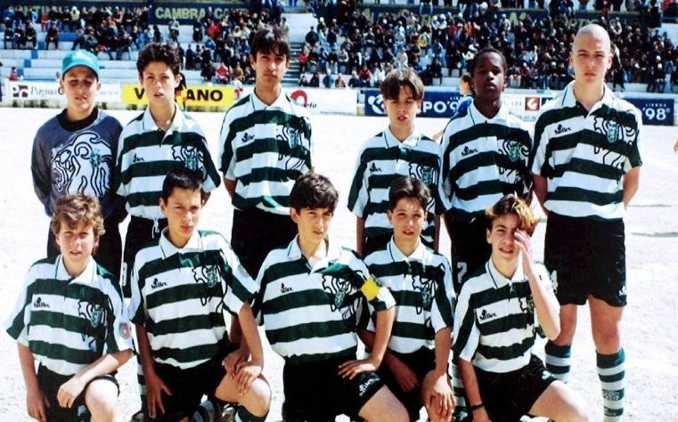
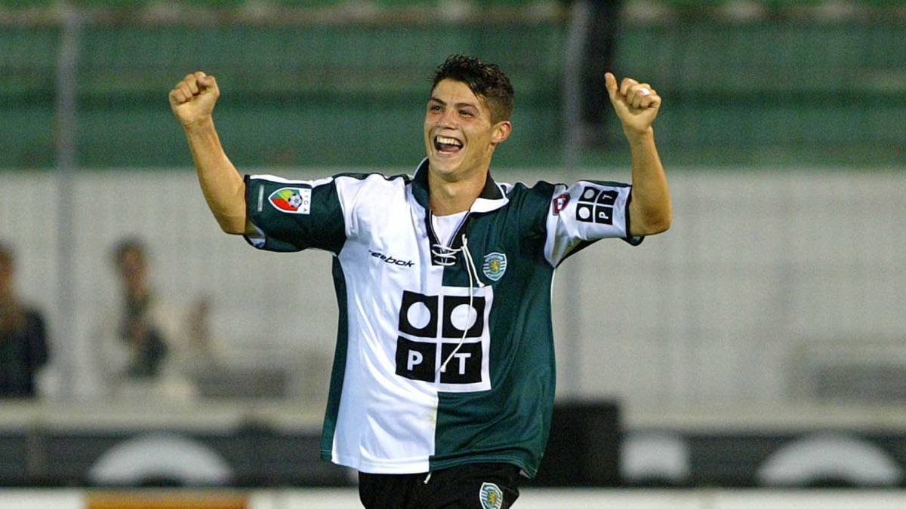
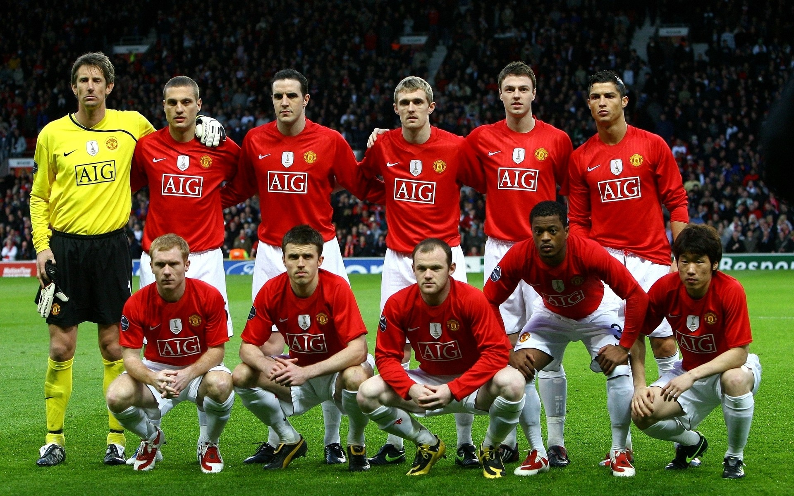
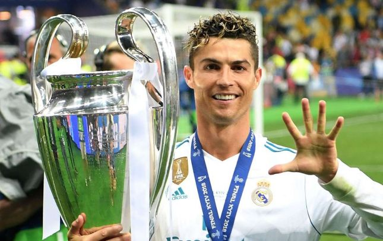
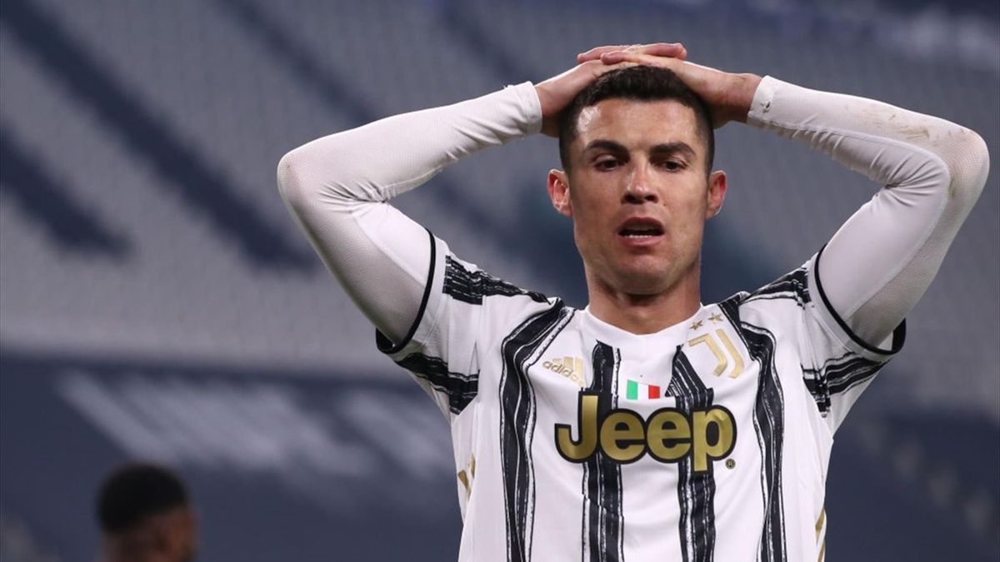
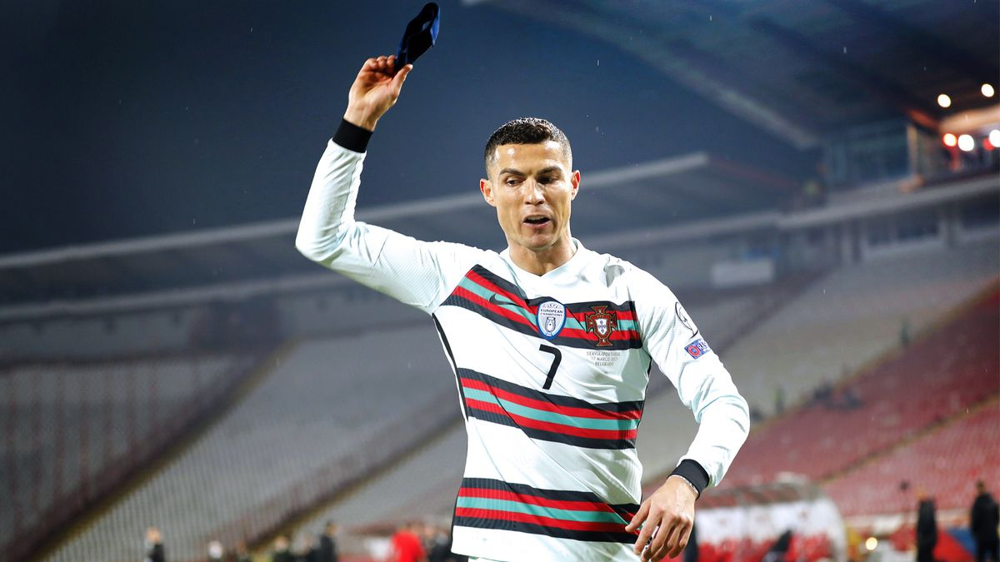

Общая информация
Криштиану Роналду (Криштиану Роналду душ Сантуш Авейру) (1985) – португальский футболист, лучший футболист Европы 2008 года (обладатель «Золотого мяча»), игрок года ФИФА в 2008.Родился Криштиану 5 февраля 1985 года в португальском городе Фуншал. Увлечение футболом в биографии Криштиано Роналдо проявилось еще в детстве. В 1993 году Криштиано стал играть за команду «Андоринья», затем в 1995 году – в клубе «Насьюнал». Дальнейшим карьерным шагом среди молодежных клубов в биографии Кристиано Роналдо стало подписание контракта со «Спортингом».
За один сезон Криштиану Роналдо в биографии успел сыграть в резервном и в основном составе команды «Спортинг». Также играл в составе Португальской сборной на молодежном чемпионате Европы.
После игры 2003 года «Спортинг» – «Манчестер Юнайтед», талантливого футболиста заметил тренер – Алекс Фергюсон. Он подписал контракт (трансфер – 12,24 млн фунтов) с Криштиану, когда сезон 2002-2003 был окончен. С 2003 года Роналду выступает за «Манчестер Юнайтед». В этом же году вошел в состав национальной сборной.
В первом своем сезоне 2003-2004 в составе команды Роналду забил 6 голов, в сезоне 2004-2005 – 9, 2005-2006 – 12. Затем его показатели были значительно увеличены, в сезоне 2006-2007 он принес команде 23 гола, в 2007-2008 – 42. «Манчестер» выиграл Премьер-лигу в 2006-2007, 2007-2008 годах, Кубок Англии в 2004, Кубок Лиги в 2006, 2009 годах. Также команда победила в Лиге Чемпионов УЕФА в 2008 году, Суперкубке Англии – в 2007, 2008, Клубном чемпионате мира – в 2008.
За свою биографию Криштьяно Роналдо дважды становился лучшим футболистов Англии, в 2008 году стал лучшим футболистом, нападающим по версии УЕФА, лучшим футболистом мира, Европы. Также Криштиану обладает множеством других значимых наград и званий.
Молодёжная карьера
В шесть лет Криштиану получил приглашение сыграть за «Андоринью», где его отец подрабатывал, изготовляя клубную футбольную форму. В сезоне 1993/94 в матче против «Камачи» при счёте 0:2 в пользу соперника Роналду вышел во втором тайме, забил два гола и помог «Андоринье» одержать победу 3:2. В «Андоринье» Роналду получил прозвище Абельинья так как всегда был в движении на поле. Вскоре на Криштиану обратили внимание два самых сильных клуба острова: «Насьонал» и «Маритиму». Крёстный Роналду тренировал юношеский состав «Насьонала» и хотел видеть юного футболиста в клубе. Однако отец хотел, чтобы его сын перешёл в «Маритиму». Было решено организовать встречу представителей обоих клубов с президентом «Андориньи», однако тренер юношеской команды «Маритиму» не явился. В итоге Криштиану перешёл в «Насьонал» в обмен на 20 мячей и два комплекта юниорской формы Когда Роналду присоединился к «Насьоналу», ему было десять лет. Тренеры «Насьонала» обратили внимание на худощавое телосложение футболиста и порекомендовали ему больше есть, чтобы набрать мышечную массу. Уже на том этапе Роналду демонстрировал хорошую технику, высокую скорость, точные пасы и владение мячом, однако наставники Криштиану столкнулись с проблемой излишнего индивидуализма и гордыни футболиста. В сезоне 1995/96 Роналду выиграл с «Насьоналом» чемпионат среди 10-12-летних. На молодого футболиста обратили внимание «Порту» и «Боавишта». Крёстный отец Роналду связался с представителем столичного «Спортинга». Вскоре клуб отправил своего скаута на просмотр футболиста В апреле 1997 года Криштиану отправился на просмотр в «Спортинг». Тренеры клуба были впечатлены игрой Роналду и пригласили посмотреть на него директора молодёжного клуба Аурелиу Перейру. 17 апреля было принято окончательное решение пригласить Криштиану в «Спортинг». «Насьонал» был должен «Спортингу» 4,5 млн португальских эскудо (22,5 тысячи евро) за переход молодого игрока Франку. Трансфер Роналду позволил списать долг. В конце августа Криштиану окончательно переселился в Лиссабон. По выходным он подрабатывал, подавая мячи на матчах «Спортинга». В 15 лет у Роналду диагностировали тахикардию вследствие врождённого порока сердца. Потребовалось хирургическое вмешательство, в результате которого Криштиану лазером восстановили повреждённый участок сердца, через несколько дней выписав его. Операция не отразилась на спортивных показателях футболиста. В 16 лет он стал единственным футболистом в истории клуба, сыгравшим за все составы «Спортинга» (до 16, до 17, до 18 лет и резервную команду) в течение одного сезона. В августе 2001 года Роналду подписал свой первый профессиональный контракт на четыре года с зарплатой 2000 евро в месяц.
Клубная Карьера
«Спортинг»
18 августа 2002 года Роналду стал обладателем первого трофея в своей профессиональной клубной карьере — Суперкубка Португалии, однако принять участие в матче ему не удалось. 7 октября Роналду дебютировал в чемпионате Португалии в матче с «Морейренсе». Криштиану сделал дубль и помог клубу победить со счётом 3:0. В возрасте 17 лет 8 месяцев и 2 дня он стал самым молодым автором гола в истории «Спортинга». По ходу сезона 17-летнего Роналду заметил тогдашний главный тренер «Ливерпуля» Жерар Улье, но «мерсисайдцы» не решились заключить контракт с португальцем, посчитав, что он ещё слишком молод и ему нужно время для развития своих навыков. Аналогичное решение приняли и в «Интере». Футболистом интересовался тренер лондонского «Арсенала» Арсен Венгер, который даже отправил ему личное приглашение в Лондон. Также Роналду интересовались испанские «Валенсия» и «Атлетико Мадрид», а итальянские «Парма» и «Ювентус» направляли конкретные предложения с суммой более 10 млн евро. К концу сезона Криштиану сыграл 25 матчей чемпионата, из которых 11 — в стартовом составе. Он забил три гола в лиге и два — в Кубке Португалии.
«Манчестер Юнайтед»
Роналду дебютировал за «Манчестер Юнайтед» в матче с «Болтон Уондерерс» на «Олд Траффорд» 16 августа 2003 года. Встреча завершилась победой хозяев со счётом 4:0. В первое время Роналду было трудно привыкнуть к более контактному стилю игры в Англии, где защитникам давали большую свободу действий, нежели в Португалии. Первый гол за «красных» португалец забил 1 ноября 2003 года со штрафного удара в матче с «Портсмутом», завершившегося со счётом 3:0. 25 февраля 2004 года Криштиану в матче с «Порту» впервые вышел в составе «Юнайтед» в Лиге чемпионов. «Манчестер Юнайтед» завершил сезон на третьем месте. Однако у клуба оставался шанс выиграть трофей — Кубок Англии. В финале против «Милуолла» Роналду забил гол, в итоге его команда одержала победу со счётом 3:0 и выиграла данный турнир. Роналду завершил сезон, забив восемь голов в 40 матчах во всех турнирах. По итогам голосования болельщиков «Юнайтед» ему достался приз сэра Мэтта Басби. 21 мая 2008 года в финале Лиги чемпионов 2007/08 в Москве против «Челси» Роналду открыл счёт. «Челси» удалось отыграться, а основное и дополнительное время победителя не выявили. В серии пенальти Роналду пытался переиграть Петра Чеха, резко остановившись перед ударом, но Чех отбил его. Впоследствии Джон Терри не смог реализовать свой пенальти, в итоге «Юнайтед» удалось одержать победу и выиграть Лигу чемпионов. Роналду был выбран лучшим игроком матча по версии УЕФА. За этот сезон Роналду сохранил зрелищность своей игры, но также расширил свой репертуар новыми навыками: он научился пробивать левой ногой, улучшил исполнение штрафных ударов и ударов головой, а также стал больше работать на команду. Голевые показатели Роналду сделали его не только лучшим бомбардиром Премьер-лиги в сезоне (31 гол), но и первым вингером в истории, завоевавшим «Золотую бутсу». Также Криштиану во второй раз подряд стал лучшим футболистом Англии и по версии журналистов, и по версии футболистов
«Реал Мадрид»
6 июля 2009 года на «Сантьяго Бернабеу» состоялась презентация Роналду в новом клубе, её посетило около 80 тысяч человек. Поскольку капитан мадридского клуба Рауль уже носил номер 7, использовавшийся португальцем в «Манчестер Юнайтед», Роналду выбрал номер 9. Первый матч за «Реал» Роналду сыграл 20 июля — это произошло в рамках предсезонной подготовки, а соперником стала ирландская команда «Шемрок Роверс». Дебют Криштиану Роналду в официальном матче за «Реал Мадрид» состоялся 29 августа 2009 года во встрече с «Депортиво» (3:2), в том матче он забил и первый мяч. Сезон 2011/12 стал для Роналду самым результативным с начала карьеры: он забил 60 голов во всех соревнованиях. 100-й гол за «Реал Мадрид» был забит на «Камп Ноу» в матче Суперкубка Испании. В Лиге чемпионов «Реал» дошёл до полуфинала, где встретился с «Баварией». В ответном матче дубль Роналду перевёл игру в овертайм, но команда проиграла в серии пенальти, при этом португалец не реализовал свой удар. 5 мая Роналду сыграл матч с «Гранадой», ставший для Криштиану 100-м в чемпионате Испании; в этой встрече он забил 300-й гол в своей профессиональной карьере. По итогам сезона «Реалу» удалось выиграть свой первый титул чемпионата Испании за последние четыре года, набрав рекордные для Испании 100 очков. Сам Роналду занял второе место в голосовании и на «Золотой мяч», и в рейтинге «Золотой бутсы», в обоих случаях его опередил Лионель Месси.23 октября 2017 года португалец во второй раз подряд получил награду The Best FIFA Mens Player. 6 декабря в матче против дортмундской «Боруссии» Роналду забил мяч и стал первым игроком, который отметился как минимум одним голом во всех шести матчах группового этапа Лиги чемпионов. Днём позже Роналду выиграл «Золотой мяч» в пятый раз. 3 марта 2018 года португалец сделал дубль в домашнем матче против «Хетафе»; первый из его мячей стал 300-м по счёту голом в чемпионате Испании, забитым за 286 матчей, что закрепило за Роналду звание самого быстрого игрока, достигшего данного результата. 3 апреля в четвертьфинале Лиги чемпионов 2017/18 Роналду сделал дубль в выездной игре с «Ювентусом», свой второй мяч португалец забил ударом через себя. Во втором матче Роналду забил мяч, продвинувший «сливочных» в полуфинал: португалец реализовал пенальти в добавленное время. «Реал» проиграл этот матч со счётом 3:1, однако всё равно прошёл дальше по сумме двух матчей (4:3). В финале турнира «Реал Мадрид» победил английский «Ливерпуль», благодаря чему Роналду завоевал свой пятый титул Лиги чемпионов, а также стал первым пятикратным победителем турнира (без учёта Кубка европейских чемпионов). С 15 мячами Криштиану Роналду стал лучшим бомбардиром турнира в шестом сезоне подряд.
«Ювентус»
23 сентября 2019 года Криштиану Роналду занял третье место в номинации на награду The Best FIFA Mens Player. 18 декабря португалец в борьбе за верховой мяч прыгнул на 256 см (выше перекладины футбольных ворот), в этом эпизоде он забил победный мяч в ворота «Сампдории». 6 января 2020 года Роналду сделал свой первый хет-трик в Серии А, благодаря чему «старая синьора» смогла одержать победу над «Кальяри» (4:0). 22 февраля в матче против СПАЛ Роналду забил гол в своей 11-й игре подряд в Серии А, повторив рекорд лиги, установленный Габриэлем Батистутой и Фабио Квальяреллой. Также этот матч стал 1000-м для португальца в профессиональном футболе. 17 июня 2020 года Криштиану Роналду сыграл в финале Кубка Италии против «Наполи», в котором «Ювентус» потерпел поражение по итогу серии пенальти. 22 июня Роналду реализовал пенальти в матче против «Болоньи» и обогнал Руя Кошту, став самым результативным португальским игроком в истории чемпионата Италии. 4 июля он забил свой 25-й гол в сезоне, реализовав штрафной удар в матче против «Торино». Роналду стал первым игроком «Ювентуса», достигшим данного результата после Омара Сивори, данный гол также стал первым для Криштиану со штрафного удара за 43 попытки в составе «бьянконери». 20 июля Роналду забил два гола в матче против «Лацио»; один из его мячей стал 50-м в Серии А. Криштиану Роналду забил 50 голов за 61 матч чемпионата Италии, из-за чего стал самым быстрым игроком, который достиг данного результата, а также первым игроком в истории, забившим 50 голов в чемпионатах Англии, Испании и Италии. По итогам сезона Роналду вновь стал чемпионом Италии. Лигу чемпионов «Ювентус» покинул на стадии 1/4 финала, проиграв «Лиону» по правилу выездного гола. Роналду сделал дубль в ответном матче, но по сумме двух игр счёт был 2:2, что давало право пройти дальше французам.
Карьера в сборной
В национальной сборной Португалии Криштиану Роналду дебютировал в возрасте 18 лет 20 августа 2003 года в товарищеском матче против сборной Казахстана (1:0), выйдя на замену во втором тайме. Роналду был признан лучшим игроком матча. В возрасте 19 лет он был включён в состав сборной на Евро-2004, проходивший в Португалии. 6 февраля 2007 года Роналду впервые сыграл в товарищеском матче против сборной Бразилии в качестве капитана команды. Роналду забил восемь голов в квалификации Евро-2008, вследствие чего стал вторым в списке лучших бомбардиров отбора, но отличился лишь одним забитым мячом на самом турнире. Свой единственный мяч португалец забил в игре с Чехией, в этой же игре он отличился голевой передачей на Рикарду Куарежму, а также стал «игроком матча». В четвертьфинале Португалия проиграла сборной Германии со счётом 3:2 и вылетела с турнира. После прошедшего чемпионата мира Роналду пропустил шесть матчей национальной сборной, включая весь групповой этап Лиги наций УЕФА 2018/19. Впервые после мундиаля в России Роналду появился на поле на поле лишь 5 июня 2019 года, в полуфинале Лиги наций УЕФА против сборной Швейцарии. Ему удалось сделать хет-трик в той игре, что обеспечило португальской сборной проход в финал турнира. Благодаря этому хет-трику Роналду стал первым игроком, который отмечался голом в десяти международных турнирах подряд, он побил рекорд Асамоа Гьяна. В финале Лиги наций Португалия обыграла Нидерланды со счётом 1:0 и тем самым одержала победу в данном турнире. 15 июня 2021 года Роналду забил два гола в первой игре Португалии на Евро-2020, его команда победила Венгрию со счётом 3:0. Таким образом, он забил свой одиннадцатый гол на чемпионате Европы, опередив Мишеля Платини и став лучшим бомбардиром в истории турнира. Он также стал первым игроком, который забил на пяти чемпионатах Европы[314]. 23 июня он реализовал два пенальти в заключительном матче группового этапа с Францией (ничья 2:2) и повторил рекорд Али Даеи в 109 голов за сборную. 27 июня Португалия выбыла из турнира после поражения от Бельгии в 1/8 финала со счётом 1:0. Роналду закончил турнир с пятью голами (столько же забил чех Патрик Шик), став лучшим бомбардиром Евро. 1 сентября Роналду забил два гола головой, чем в добавленное время принёс победу Португалии над Ирландией со счётом 2:1, в результате он побил рекорд Дае.
Рекорды
По состоянию на 20 октября 2021 года
-
 Лучший бомбардир в истории национальных сборных: 111 голов
Лучший бомбардир в истории национальных сборных: 111 голов
-
Лучший бомбардир в истории чемпионатов Европы: 14 голов
-
Рекордсмен чемпионатов Европы по количеству сыгранных матчей: 24 матча
-
Лучший бомбардир в истории отборочных турниров чемпионата Европы: 31 гол
-
Лучший бомбардир в истории сборной Португалии: 111 голов
-
Рекордсмен сборной Португалии по количеству сыгранных матчей: 180 матчей
-
Лучший бомбардир в истории международных матчей на клубном уровне: 140 голов
-
Рекордсмен по количеству проведённых матчей в еврокубках: 185 матчей
-
Лучший бомбардир в истории Лиги чемпионов УЕФА: 137 голов
-
Лучший ассистент в истории Лиги чемпионов УЕФА: 42 голевые передачи
-
Лучший бомбардир в истории Клубного чемпионата мира: 7 голов
-
Рекордсмен Лиги чемпионов УЕФА и Кубка европейских чемпионов по количеству голов в сезоне: 17 голов
-
Рекордсмен Лиги чемпионов УЕФА по количеству хет-триков за карьеру: 8 хет-триков
-
Лучший бомбардир в истории «Реал Мадрид»: 450 голов
-
Рекордсмен «Реал Мадрид» по количеству голов в сезоне: 61 гол
-
Рекордсмен «Ювентуса» по количеству голов в сезоне: 37 голов
-
Лучший бомбардир в истории мадридского дерби: 22 гола
-
Единственный игрок в истории Лиги чемпионов УЕФА, забивавший 10 и более голов в течение 7 сезонов подряд
-
Единственный игрок, получивший все три призовых мяча ФИФА: бронзовый (2007), серебряный (2009), золотой (2008)
-
Единственный игрок в истории испанского футбола, забивавший 50 и более голов во всех соревнованиях в течение 6 сезонов
-
Рекордсмен чемпионата Испании по количеству хет-триков за сезон: 8 хет-триков
-
Рекордсмен чемпионата Италии по количеству матчей подряд, в которых удалось отметиться голом: 11 матчей
-
Рекордсмен Лиги чемпионов УЕФА по количеству хет-триков за сезон: 3 хет-трика
-
Рекордсмен по количеству голов в международных матчах в течение календарного года: 32 гола